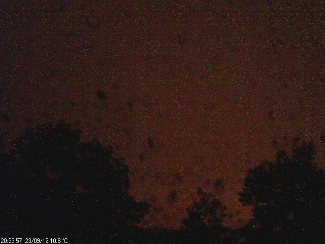
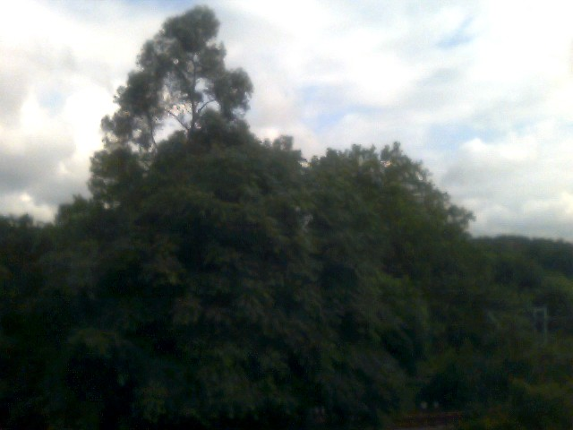
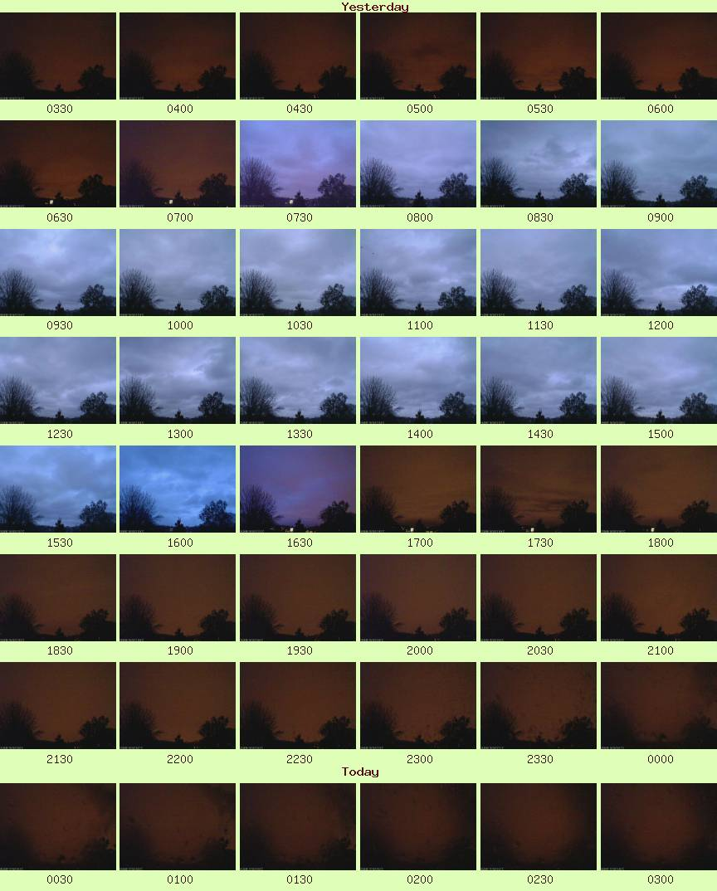

Webcam
Latest Skycam Image
The camera is a Logitech C300 and is looking NE over Hampstead Heath (see map).

The image is updated automatically: every minute from approximately surise to sunset (see times), and every 5 minutes otherwise.
A self-contained version is also available.
Latest Groundcam Image
The camera is a Microsoft Lifecam VX-2000 and is looking NNE over Hampstead Heath (see map).

The image updates every 5 minutes, 24 hours a day.
Skycam Timelapses
Two are available: a higher quality, slower video of the last hour, created hourly at 5 minutes past the hour;or a sped-up one for the entire day, updated every 10 minutes.
NB: There is also a higher quality video of the all-day timelapse, created nightly at 22:05 BST. The latest version is available for download here
| Last Hour (daylight only) | Last 24hrs |
If Last Hour video does not show: Launch file in external media player (right-click to save).
Or Download Firefox plugin (Windows only).
Archive:
The shorter versions are available
here.
The high-quality, extended full-day timelapses are available on request.
Skycam images from the last 24 hours
A higher resolution version is also available.

See full archive (starting 01/08/10).
| NB: Some a.m. images may be blurred due to condensation; an absent image means conditions were too dark to record anything useful. |